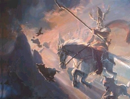
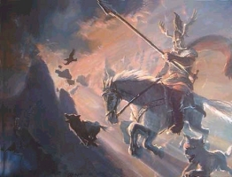

Heiligen behoren tot de rooms-katholieke cultuur. Zij hebben tijdens hun leven maar ook daarna wonderen verricht, daden die bovennatuurlijk genoemd moeten worden. Die wonderdaden zijn eerst mondeling, later schriftelijk overgeleverd en deze verhalen worden legenden genoemd. Ze dienden en dienen vooral om het rooms-katholieke geloof voor de gewone mensen te bevorderen. Daarom werden ze vroeger - vooral in de Middeleeuwen - veel (voor)gelezen.
Ook over de heilige Nicolaas zijn legenden verteld en opgeschreven. De bekendste zijn de verhalen over de vele keren dat Sint Nicolaas het leven van schepelingen redde door de storm waarin ze verkeerden, te kalmeren. En het verhaal waarin hij drie jongelingen weer tot leven brengt, die door een misdadige herbergier gedood en ingezouten waren. Bijna onbekend zijn enkele andere legenden waarin Sint Nicolaas de hoofdrol speelt.

Frits Booy
Bronnen:M. Ebon: Saint Nicholas - life en legend, New York 1975, R. van der Linden e.a.: Leven en legenden van Sinterklaas in Vlaanderen, Sint-Niklaas 1977
Ook over de heilige Nicolaas zijn legenden verteld en opgeschreven. De bekendste zijn de verhalen over de vele keren dat Sint Nicolaas het leven van schepelingen redde door de storm waarin ze verkeerden, te kalmeren. En het verhaal waarin hij drie jongelingen weer tot leven brengt, die door een misdadige herbergier gedood en ingezouten waren. Bijna onbekend zijn enkele andere legenden waarin Sint Nicolaas de hoofdrol speelt.

Frits Booy
Bronnen:M. Ebon: Saint Nicholas - life en legend, New York 1975, R. van der Linden e.a.: Leven en legenden van Sinterklaas in Vlaanderen, Sint-Niklaas 1977
Sint Nicolaas begint zijn leven al met een klein wonder. Als hij na zijn geboorte wordt gebaad, gaat hij in zijn badje rechtop staan! Dat lukt natuurlijk geen enkel pasgeboren kind. Ook wordt van hem verteld, dat hij twee dagen per week de moederborst weigerde: al een vroege neiging tot vasten, die bij andere heiligen pas op latere leeftijd bekend is. Dit waren natuurlijk duidelijke tekenen, dat er een zeer bijzonder kind was geboren!
Keizer Constantijn de Grote had vaak te maken met opstanden in verre streken van zijn uitgestrekt rijk. Zo stuurde hij eens drie generaals erop uit om een opstand te onderdrukken. Dat lukte hun zonder bloedvergieten en de keizer was zeer tevreden over dit resultaat. Maar jaloerse hovelingen fluisterden in het keizerlijke oor, dat de generaals juist - tot hun voordeel - hadden méégewerkt met de opstandelingen. Ze waren hun keizer dus ontrouw geweest! Aangezien deze situatie vaker was voorgekomen, geloofde Constantijn deze laster en besloot hij de generaals te laten doden. Deze schrokken uiteraard van dit bericht en riepen vurig de heilige Nicolaas aan om hen te redden. Dat deed de heilige.
In de eerste eeuwen van onze jaartelling geloofden velen nog aan heidense goden en demonen. Zo werd de demon Diana vereerd onder een boom. Sint Nicolaas wees deze verering af en liet de boom omhakken. Dat nam Diana natuurlijk niet. Ze vermomde zich als non en kwam met gevaarlijke explosieve olie naar de kerk van Nicolaas. Maar deze greep op tijd in en liet als bewijs de olie op zee uitgieten, waardoor het water lang en met hoge vlammen brandde. Ook zijn er enkele legenden waarin wordt verteld, dat Sint Nicolaas zich razendsnel door de lucht verplaatste om mensen in levensgevaar te redden. Dit lijkt natuurlijk erg veel op de wijze waarop hij zich met zijn schimmel 's nachts over de daken door heel Nederland verplaatst om alle kinderen lekkers en cadeautjes te brengen!